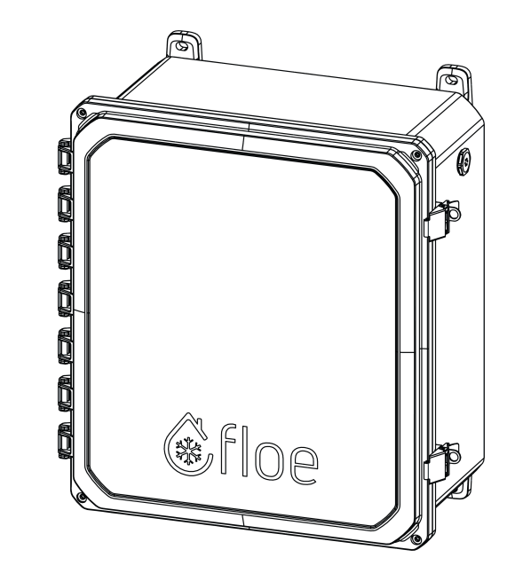

See the situation
Weather, alerts and devices in one overview.
Understand the system.
Stay in control.
FLOE is a rooftop ice-management system. Its connected devices use sensors and weather information to manage deicing fluid. The web portal gives people a way to monitor and manage that equipment.
My focus was the digital experience: help someone understand what needs attention, control the intended device, and see who else has access.
I worked as the UI/UX designer and collaborated directly with developers. The hardest part was understanding the backend process behind the interface. That technical context matters because a control on screen needs to represent what the connected system can actually do.
Weather, alerts and devices in one overview.
Device details and activity provide context.
Manage a pump event for a specific device.
Keep people and permissions visible.
The January 2024 operating manual describes cellular connectivity and automatic operation. A useful interface therefore needs to help people distinguish what they see on screen from what the remote equipment is doing.
Product context: 2024 operating manual ↗Current support documentation describes fluid estimates and connection issues. This informs a proposed refinement: show uncertainty and freshness alongside device status.
Current FloeVue support documentation ↗The original screens include device-level Shared Users and account user details. The design review identifies an important question: does a permission change affect one device or the whole account?

Protective enclosureMounting pointsA person checking several devices needs to identify what deserves attention before opening every device individually.
I brought weather and alerts above a set of device cards. Each card groups the device name, location, fluid visual, status and sharing action. This provides both an overview and an entry point for investigation.
Keeping context and device identity together supports a quick scan. More detailed investigation can happen within the selected device, keeping the overview from carrying every setting.
Weather graphics and repeated alerts compete for attention. My next refinement would strengthen urgency and distinguish connection status, operating state and fluid estimates.
Weather and alerts sit above the device collection.
Names and locations support choosing the intended device.
Fluid information, status and sharing remain beside the device.
Operating connected equipment requires more confidence than reading a dashboard. A user needs to know which device an action affects and which event they are changing.
I gave Manual Control its own navigation destination. Event cards bring device identifiers, volume, timing, recurring labels and Pause, Resume or Cancel actions together.
Separating monitoring from control makes the change in task explicit. Keeping actions attached to individual events provides context at the point of interaction.
A visible event state does not explain whether the device received a command. The proposed next iteration would distinguish a saved request, delivery to the device and confirmed execution, including what happens when a device is unavailable.
The navigation distinguishes controlling equipment from checking it.
Device identifiers, timing and volume appear within each event.
Pause, Resume and Cancel sit with the event they affect.
A connected device can involve multiple people. The interface needs to make their access understandable before someone changes it.
I placed a Shared Users tab within the device workspace. User cards expose role and permission information, while the separate user-detail view provides more room for account-level actions.
Reviewing people within a selected device retains the context of the access decision. Named sharing actions also make the next step easier to interpret than an unexplained icon.
The interface must match the actual permission rules. Before refining this flow, I would confirm device-level versus account-level scope with the product team and state the consequences before a change is applied.
The device header is retained while reviewing shared access.
User cards expose role and permission information.
The next review should verify that labels match the actual access rules.
Follow the journey from spotting a device that needs attention to reviewing its response.
Device names, navigation and status language connect the overview, event history and shared-access views. Help and preferences provide support for different needs.
The next responsive review should check enlarged text, keyboard access and complete control tasks on smaller screens.
The next evaluation should focus on whether people interpret a status correctly, act on the intended device, and understand the access they grant.
UI/UX design for an American client in early 2024, working directly with developers. The design covers monitoring, manual pump events, device information, activity, shared access, user details, help, authentication and preferences.
The experience organises a technical product around understandable tasks: inspect a device, manage an event and coordinate access. The strongest evidence is the original interface work and the organisation visible across those screens.
Make uncertainty explicit: when a reading was updated, whether a command reached the device and exactly which devices a permission affects. Those refinements would be evaluated through the tasks above.